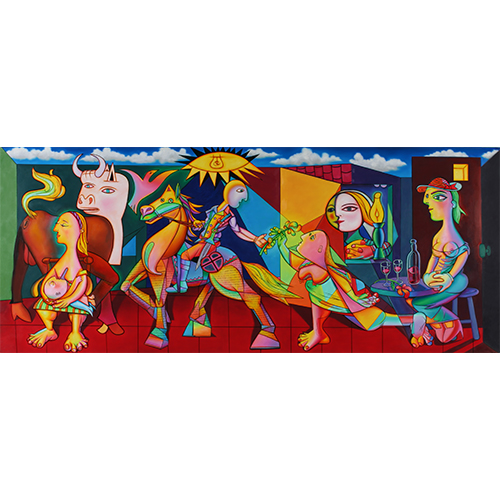
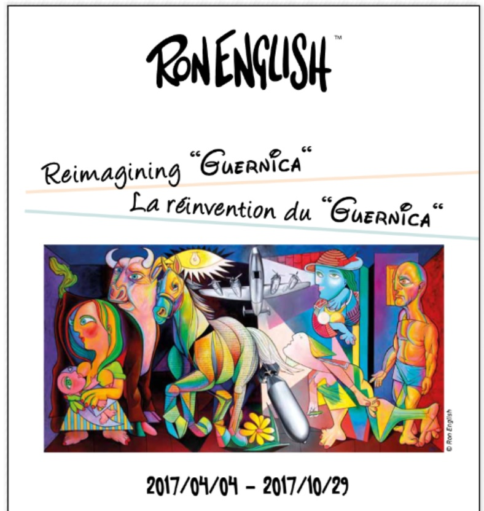
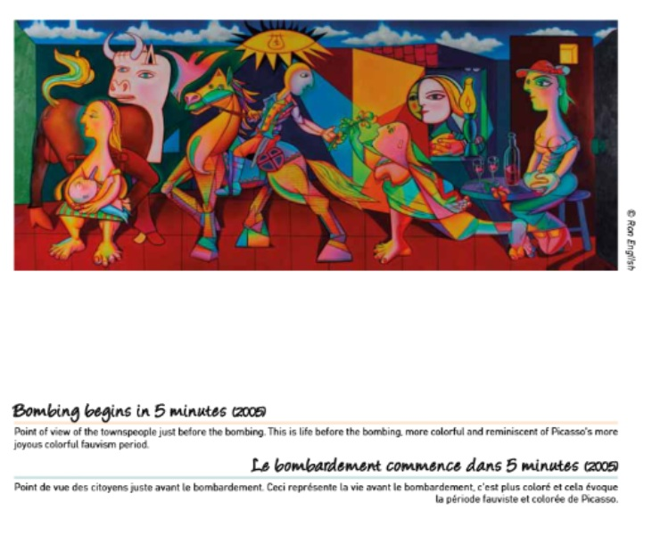
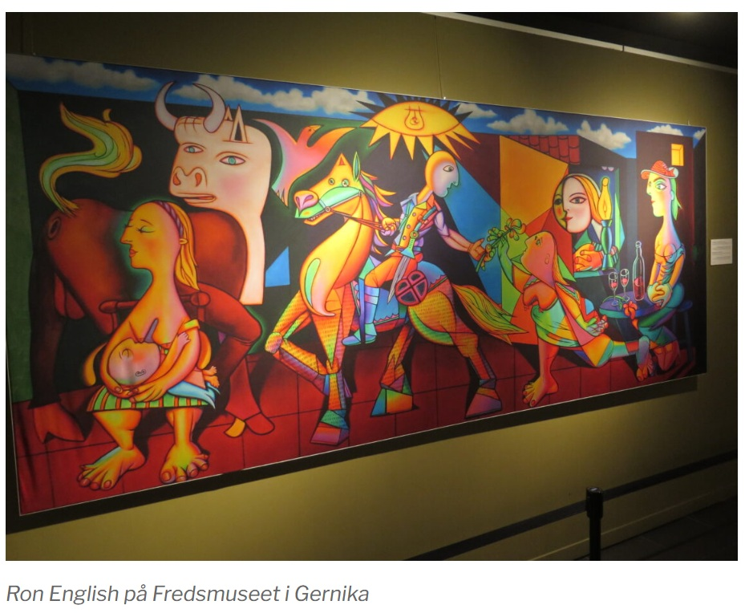
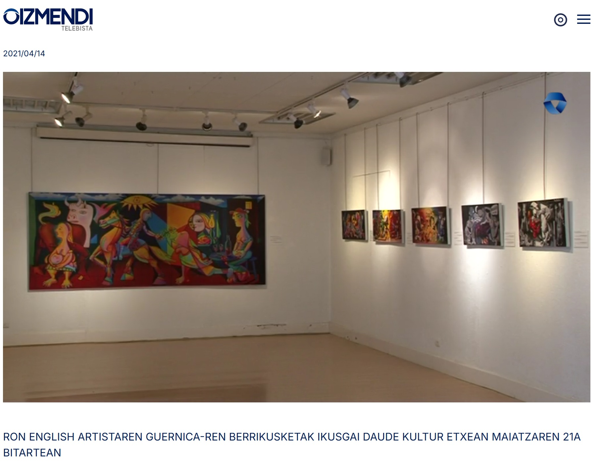

Exhibitions
Reimagining “Guernica” / La réinvention du “Guernica”, Museo de la Paz de Gernika, Gernika-Lumo, Bizkaia, Spain, April 4–December 10, 2017; the composition was presented as a print on stretched canvas, not as the original painting.
Literature
Ron English, Abject Expressionism: The Art of Ron English (San Francisco: Last Gasp, 2007), p. 70. ISBN 978-0867196894.
Museo de la Paz de Gernika, Reimagining “Guernica” / La réinvention du “Guernica” (Gernika-Lumo: Museo de la Paz de Gernika, 2017), digital exhibition catalogue / flip-book, available here, accessed April 5, 2026.
Ron English, Original Grin: The Art of Ron English (Paris: Cernunnos, 2019), p. 218. ISBN 978-2374950938.
Notes
Also known as Bombing Begins in Five Minutes.
In Abject Expressionism and Original Grin, this work was erroneously reported as 90 × 36 inches.
This work references Pablo Picasso’s Guernica.
Ancillary Documentation
The following materials document the visual/art-historical reference, the work’s appearance in the Museo de la Paz de Gernika digital exhibition catalogue, later project documentation, travel-site documentation, and video documentation.






Selected Online Circulation
Selected examples of the work’s online circulation, reproduction, or discussion. This list is not exhaustive; it is intended to document representative appearances of the image beyond formal exhibition and publication records.